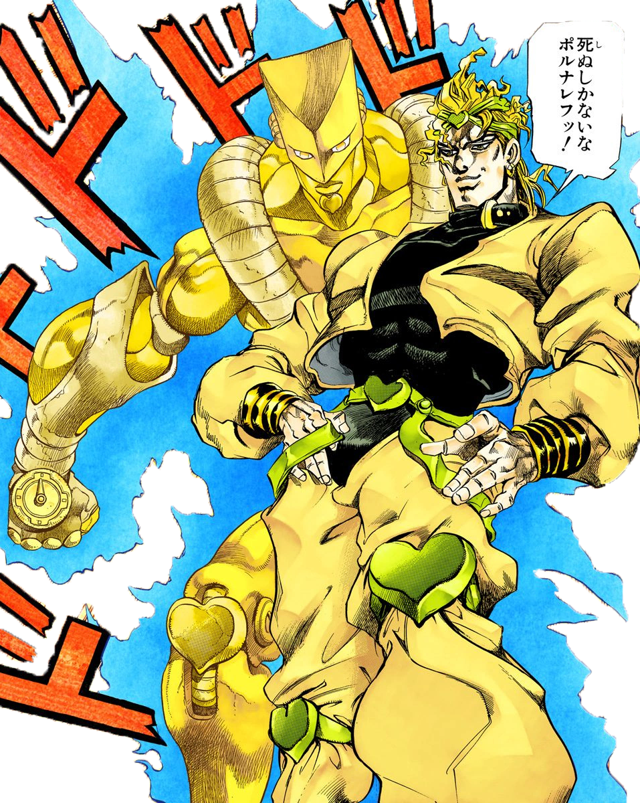
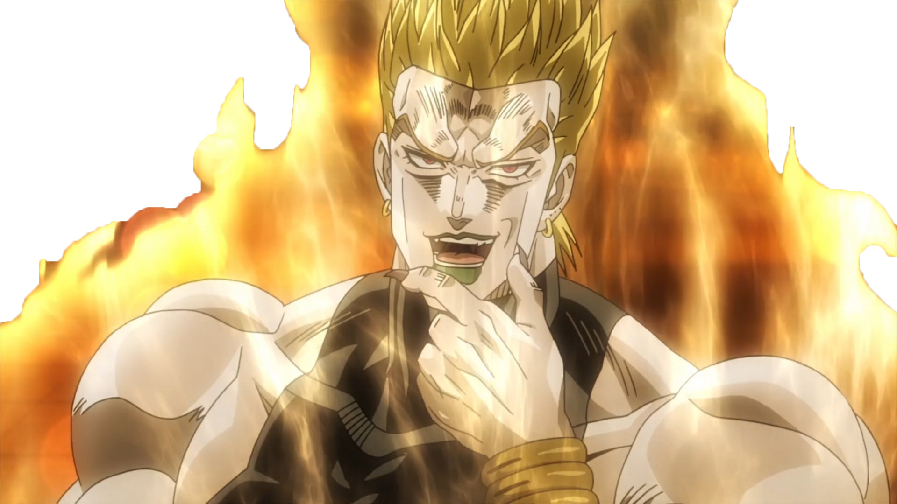
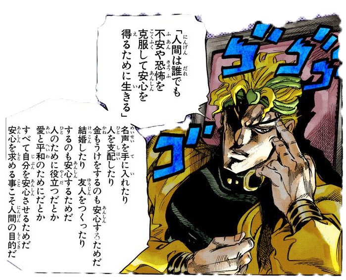

Дио Брандо, позже известный просто как ДИО — это главный антагонист первой и третьей части серии Невероятные приключения ДжоДжо, Призрачная кровь и Крестоносцы звёздной пыли.Появившись в "Крестоносцах Звёздной пыли", Дио не сильно изменился с тех пор, как его похоронили на дне океана в течение ста лет, так как он остался безжалостным и властным, но, тем не менее, немного повзрослел, признав доблесть в других и будучи в целом более спокойным и уравновешенным. Кроме финальных эпизодов, Дио не часто появляется в "Крестоносцах Звёздной пыли", но он обсуждает различные философии с пользователями стендов, которых он желает завербовать, и со своими уже лояльными последователями. В равной степени вероятно, что Дио делает это, чтобы манипулировать и убеждать, поскольку он верит тому, что говорит, но тем не менее признает силу и доблесть, которую могут иметь простые люди, особенно уважая готовность человека умереть ради своей цели.
| Стенд The World | Вампиризм | Мастерство |
| Стенд Дио, The World - гуманоидный стенд, специализирующийся на ближнем бою.The World имеет одноименную способность, позволяющую ему останавливать время. В этот момент действовать могут лишь сам Дио, также он способен передвигать и бросать предметы , однако без прямого контакта с ним , они вновь замирают в пространстве. Сначала он мог делать это в течение короткого промежутка времени, но к концу 3 части он смог остановить время на 9 секунд. Большинство персонажей не могли разгадать тайну этой способности , что делает The World очень опасным стендом. | Еще на момент 1 части, использовав Каменную маску, Дио стал вампиром. Это дало ему ряд сверхъестественных способностей.Выстрел лимфатической жидкости из глаз, который может насквозь пробить тело. Так-же вампир может обучиться мгновенной заморозки врага, что делает противника хрупким.Имеют обостренные чувства и могут вводить в гипноз. Еще одной способностью вампира являться создание Зомби. Они могут воскрешать мертвецов или обращать еще живых людей. Нежить имеет сверхчеловеческие характеристики и могут обратить другого человека в зомби с помощью укуса.Так-же вампиры могут создавать паразитов. Если вампир погибнет, то паразит уничтожает тело владельца.Вампиры слабы перед Хамоном и Солнцем. | Дио потратил достаточно времени для исследования способностей своего The World. Он мастерски пользуется сильными сторонами своего стенда и с помощью остановки времени обходит слабость , в виде не высокой дальности действия.Также, Дио хорошо осведомлен об общих правилах по которым работают стенды.Чтобы дать себе преимущество, Дио пытался держать в секрете способность The World, используя его только в ключевые моменты. Также, Дио любит использовать свою способность для запугивания своих врагов.Таким образом он пытается показать свое превосходство и заставляет противника сдастся. |
|  |  |  |